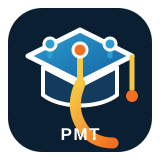

O que faz
Prepara para oportunidades
- Primeiro currículo e Jovem Aprendiz
- Análise de vagas e requisitos
- Identificação de competências
- Apresentação profissional
- Simulação de entrevistas
- Comunicação profissional
- Portfólio e apresentação de projetos

Transforme experiências reais em preparação profissional: currículo, oportunidades, entrevistas, portfólio e comunicação — sem inventar sua história.
Um caminho visível para o educando acompanhar onde está, por que está nesta etapa e qual é o próximo passo.
Prepara para oportunidades
Pergunta antes de produzir
Integridade profissional
Profissionalizar sem inventar.
A IA organiza e comunica aquilo que o educando realmente sabe, fez e pode desenvolver.
Um projeto de portfólio para organizar conceito, pesquisa, decisões visuais, produção, aplicações e apresentação profissional.
Objetivo, referências, tipografia, paleta e princípios do design.
Alternativas, esboços, logo manual, apoio de IA e aplicações.
Explicar escolhas, registrar aprendizados e transformar o projeto em evidência de portfólio.
Compreender → contextualizar → diagnosticar → analisar → produzir e verificar.